Circuit simulation#
You can describe a component linear response with its Scattering parameters
The Scattering matrix of a component can be simulated with electromagnetic methods such as Finite difference time domain (FDTD)
Simphony open source package provides you with some of the the circuit linear solver to solve the circuit response of several components connected in a circuit. Simphony also has some of the UBC models built-in.
For some components not available in simphony you can leverage gdsfactory FDTD lumerical interface to compute the Sparameters of a component.
Component models#
[1]:
import matplotlib.pyplot as plt
import numpy as np
import gdsfactory as gf
import gdsfactory.simulation.simphony as gs
import ubcpdk
import ubcpdk.simulation.circuits_simphony as cm
2022-06-22 20:37:57.026 | INFO | gdsfactory.config:<module>:52 - Load '/usr/share/miniconda/envs/anaconda-client-env/lib/python3.9/site-packages/gdsfactory' 5.10.15
2022-06-22 20:37:58.966074: W tensorflow/stream_executor/platform/default/dso_loader.cc:64] Could not load dynamic library 'libcudart.so.11.0'; dlerror: libcudart.so.11.0: cannot open shared object file: No such file or directory
2022-06-22 20:37:58.966114: I tensorflow/stream_executor/cuda/cudart_stub.cc:29] Ignore above cudart dlerror if you do not have a GPU set up on your machine.
2022-06-22 20:38:01.193144: W tensorflow/stream_executor/platform/default/dso_loader.cc:64] Could not load dynamic library 'libcuda.so.1'; dlerror: libcuda.so.1: cannot open shared object file: No such file or directory
2022-06-22 20:38:01.193179: W tensorflow/stream_executor/cuda/cuda_driver.cc:269] failed call to cuInit: UNKNOWN ERROR (303)
2022-06-22 20:38:01.193220: I tensorflow/stream_executor/cuda/cuda_diagnostics.cc:156] kernel driver does not appear to be running on this host (fv-az196-685): /proc/driver/nvidia/version does not exist
2022-06-22 20:38:01.193565: I tensorflow/core/platform/cpu_feature_guard.cc:193] This TensorFlow binary is optimized with oneAPI Deep Neural Network Library (oneDNN) to use the following CPU instructions in performance-critical operations: AVX2 FMA
To enable them in other operations, rebuild TensorFlow with the appropriate compiler flags.
INFO:tensorflow:Restoring parameters from /usr/share/miniconda/envs/anaconda-client-env/lib/python3.9/site-packages/SiPANN/ANN/TIGHT_ANGLE_GAP/model
2022-06-22 20:38:01.432256: I tensorflow/compiler/mlir/mlir_graph_optimization_pass.cc:354] MLIR V1 optimization pass is not enabled
INFO:tensorflow:Restoring parameters from /usr/share/miniconda/envs/anaconda-client-env/lib/python3.9/site-packages/SiPANN/ANN/TIGHT_ANGLE_STRAIGHT/model
INFO:tensorflow:Restoring parameters from /usr/share/miniconda/envs/anaconda-client-env/lib/python3.9/site-packages/SiPANN/ANN/TIGHT_ANGLE_BENT_RAND/model
2022-06-22 20:38:02.469 | INFO | ubcpdk:<module>:36 - Found UBCpdk '1.6.4' installed at PosixPath('/home/runner/work/ubc/ubc/ubcpdk')
[2]:
ubcpdk.components.dc_broadband_te()
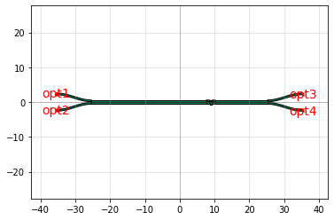
[2]:
ebeam_bdc_te1550: uid 0, ports ['opt2', 'opt1', 'opt3', 'opt4'], aliases [], 19 polygons, 0 references
[3]:
c = cm.ebeam_bdc_te1550()
gs.plot_model(c)
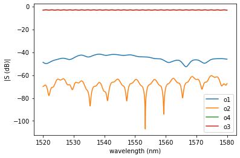
[3]:
<AxesSubplot:xlabel='wavelength (nm)', ylabel='|S (dB)|'>
[4]:
bdc = cm.ebeam_bdc_te1550()
w = np.linspace(1520, 1580) * 1e-9
f = 3e8 / w
s = bdc.s_parameters(freqs=f)
plt.plot(w * 1e9, np.abs(s[:, 0, 2]) ** 2)
plt.plot(w * 1e9, np.abs(s[:, 0, 3]) ** 2)
[4]:
[<matplotlib.lines.Line2D at 0x7fb0a910dee0>]
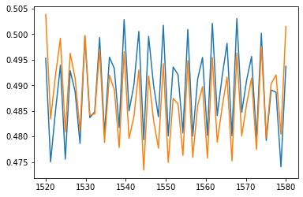
[5]:
ubcpdk.components.y_splitter()
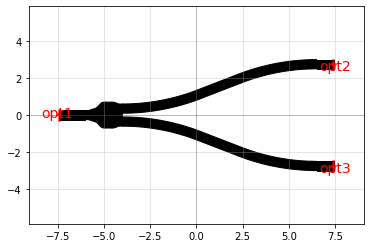
[5]:
ebeam_y_1550: uid 1, ports ['opt1', 'opt2', 'opt3'], aliases [], 18 polygons, 0 references
[6]:
c = cm.ebeam_y_1550()
gs.plot_model(c)
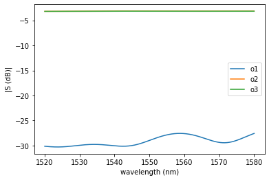
[6]:
<AxesSubplot:xlabel='wavelength (nm)', ylabel='|S (dB)|'>
[7]:
ubcpdk.components.ebeam_dc_halfring_straight()
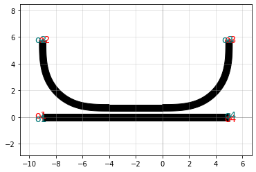
[7]:
ebeam_dc_halfring_straight: uid 12, ports ['o2', 'o1', 'o3', 'o4'], aliases [], 1 polygons, 1 references
[8]:
c = cm.ebeam_dc_halfring_straight()
gs.plot_model(c)
/usr/share/miniconda/envs/anaconda-client-env/lib/python3.9/site-packages/simphony/libraries/siepic/__init__.py:438: UserWarning: Exact parameters not available for '<class 'simphony.libraries.siepic.HalfRing'>', using closest approximation (results may not be as accurate).
Requested: {'gap': 3e-08, 'radius': 1e-05, 'width': 5e-07, 'thickness': 2.2e-07, 'couple_length': 0.0}
Selected: {'gap': 1e-07, 'radius': 1e-05, 'width': 5e-07, 'thickness': 2.2e-07, 'couple_length': 0.0}
NOTE: Model attributes may have been automatically modified.
warnings.warn(msg, UserWarning)
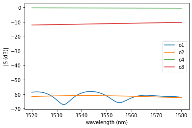
[8]:
<AxesSubplot:xlabel='wavelength (nm)', ylabel='|S (dB)|'>
[9]:
ubcpdk.components.ebeam_dc_te1550()
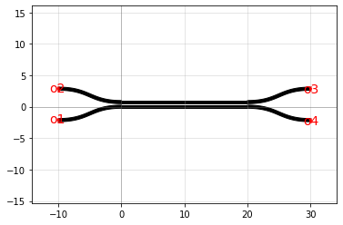
[9]:
coupler_copy: uid 21, ports ['o1', 'o2', 'o3', 'o4'], aliases [], 7 polygons, 0 references
[10]:
c = cm.ebeam_dc_te1550()
gs.plot_model(c)
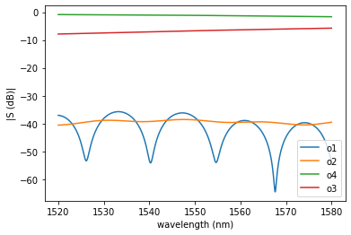
[10]:
<AxesSubplot:xlabel='wavelength (nm)', ylabel='|S (dB)|'>
Circuit simulations#
We can also do some circuit simulations.
[11]:
ubcpdk.components.mzi(delta_length=100)
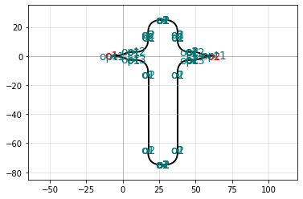
[11]:
mzi_ecdcd2bf: uid 24, ports ['o1', 'o2'], aliases [], 0 polygons, 20 references
[12]:
circuit_mzi =cm.mzi(delta_length=10)
gs.plot_circuit(circuit_mzi)
2022-06-22 20:38:06.093 | INFO | gdsfactory.simulation.simphony.components.straight:straight:23 - ignoring dict_keys([])
2022-06-22 20:38:06.095 | INFO | gdsfactory.simulation.simphony.components.straight:straight:23 - ignoring dict_keys([])
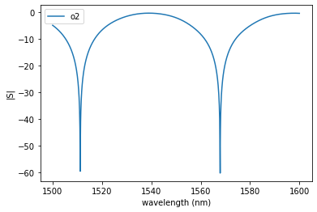
[12]:
<AxesSubplot:xlabel='wavelength (nm)', ylabel='|S|'>
[13]:
# double delta_length creates half FSR
circuit_mzi = cm.mzi(delta_length=20)
gs.plot_circuit(circuit_mzi)
2022-06-22 20:38:21.949 | INFO | gdsfactory.simulation.simphony.components.straight:straight:23 - ignoring dict_keys([])
2022-06-22 20:38:21.951 | INFO | gdsfactory.simulation.simphony.components.straight:straight:23 - ignoring dict_keys([])
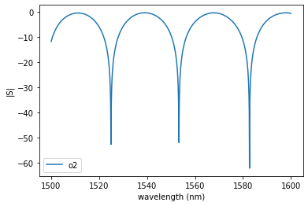
[13]:
<AxesSubplot:xlabel='wavelength (nm)', ylabel='|S|'>